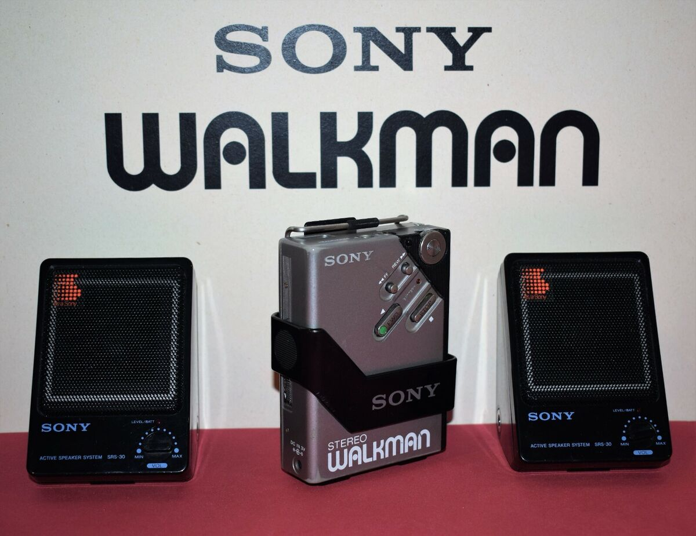
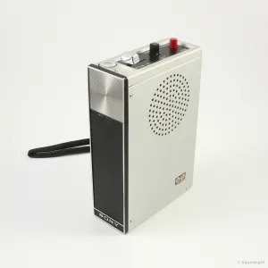
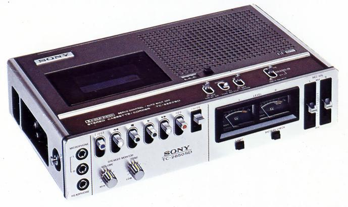
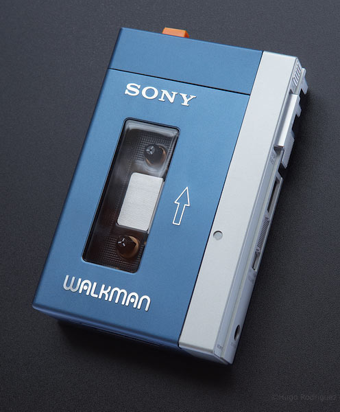
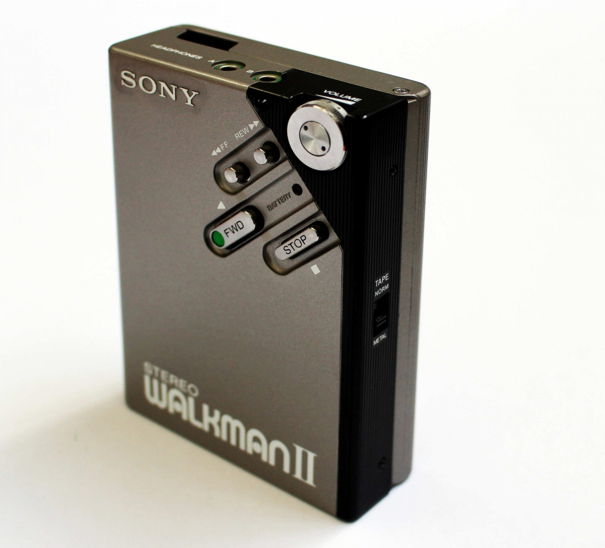

About Sony Co.
Sony Corporation has revolutionized personal audio once again with the release of the Walkman WM-2 in 1981. Building upon the success of the original Walkman, this new model is sleeker, lighter, and delivers high-fidelity stereo sound. We are ahead of the curve having generational cultural impact with our cutting edge technology. Giving our customers the ability to take their music anywhere, emphasizing on mobility and freedom.
Walkman Timeline
-  1965 - Sony introduces their one of a kind portable cassette recorder (TC-50)
-  1971 - Sony introduces the worlds first stereo cassette recorder (TC-2850SD)
-  1979 - Sony introduces the first Walkman (TPS-L2)
-  1981 - Sony releases the new and improved Walkman WM-2
×